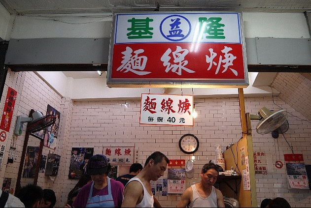
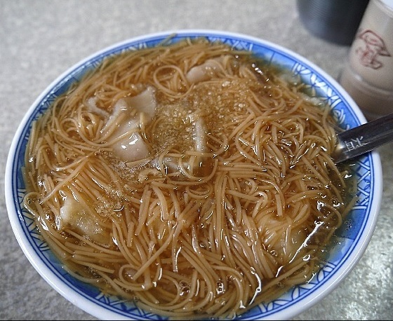
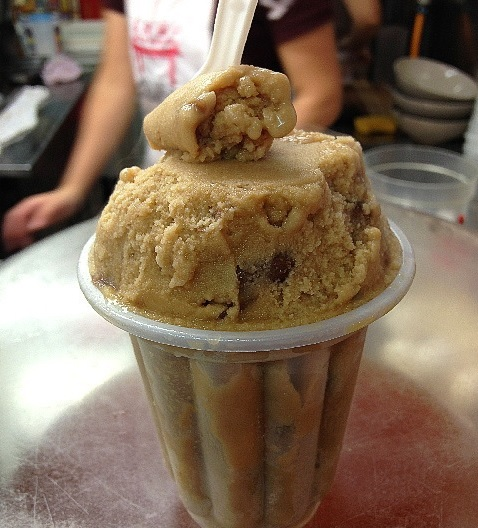

庶民小吃 -基隆 益麵線羹
麵線羹，這個應該是絕大多數的人都吃過的庶民小吃吧 ! 不過，你知道嗎 ? 在不同的地方，因加入配料的不同，叫的名稱也就跟著不同喔。”麵線羹”是最常聽到的，其它大家所熟悉的還有像是”蚵仔麵線” 及 “大腸麵線”。想當然爾，”蚵仔麵線”，指的是麵線以外，加上的是裹粉燙過的蚵仔 ( 喂~~ 這~~還用說明嗎 ?)。那麼，“大腸麵線”，就是麵線以外，還有加上大腸。所以，當你看到老闆掛出的招牌上寫的是什麼，就知道他是屬於哪一流派 ( 我知道了~~ ORZ….)。

好了，稍為了解一下”麵線羹”的稱呼後，今天要來跟大家介紹的是基隆的益麵線羹。位置是在基隆田寮河邊，緊臨基隆夜市。等一下，不是才說看老闆的招牌就知是哪一流派嗎，怎麼這一家看不出來。嗯~~，當只寫”麵線羹”，就是老闆什麼都可以加啦~~。不過這一家益麵線羹，加的是大腸及魚丸。你點好後，老闆會先來收錢，端上來後若常吃麵線的人，會發現並沒有放入香菜，在桌上有放著醋及辣椒醬，可隨個人口味添加。說到佐料，顯然老闆是有特別花心思在打點的，因為每一桌桌上放的裝佐料的瓶罐，都保持的很乾淨，這一點，我是有給他加分的。益麵線羹這家的麵線Q度很棒，每次去的時後，生意總是都很好，我吃過很多次，常常會再加點第二碗，的的確確好吃。

若是晚上過來吃這家的麵線，吃完後，還可以繞過去旁邊的夜市順道逛逛。基隆知名的夜市小吃就更多了，像是”鼎邊銼”、”天婦羅”、”泡泡冰”…等，走完一圈，保證可以讓你大飽口福。這次就先介紹到這理了，下次再來介紹更多的基隆美味小吃。
